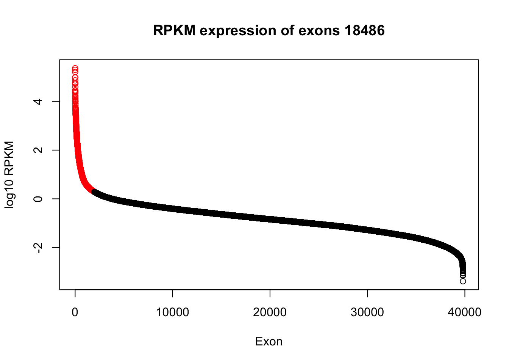
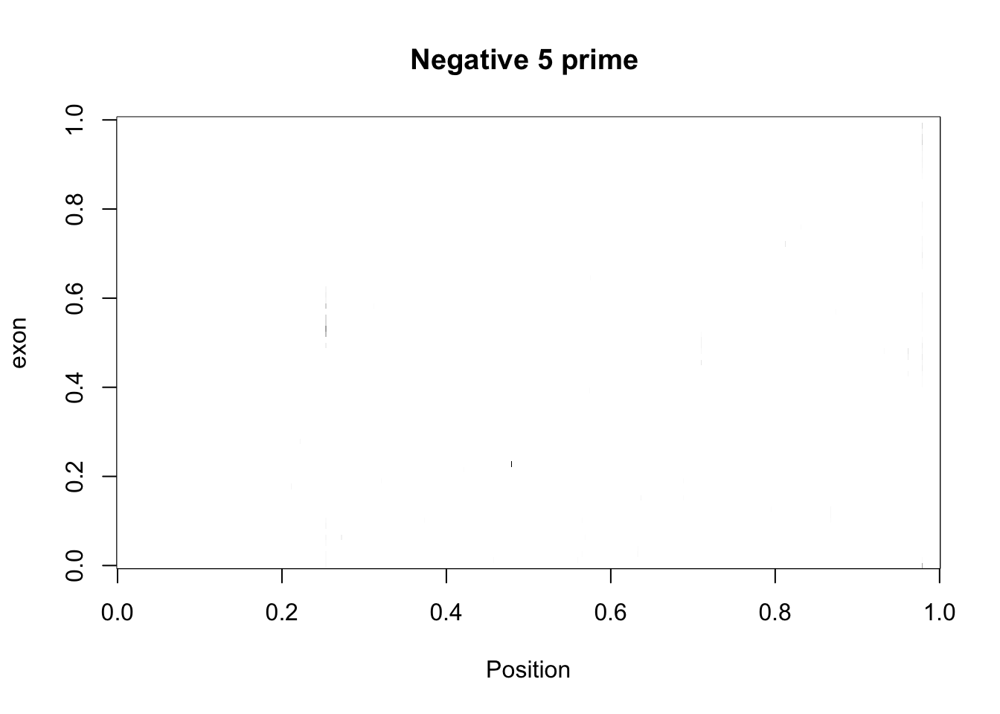
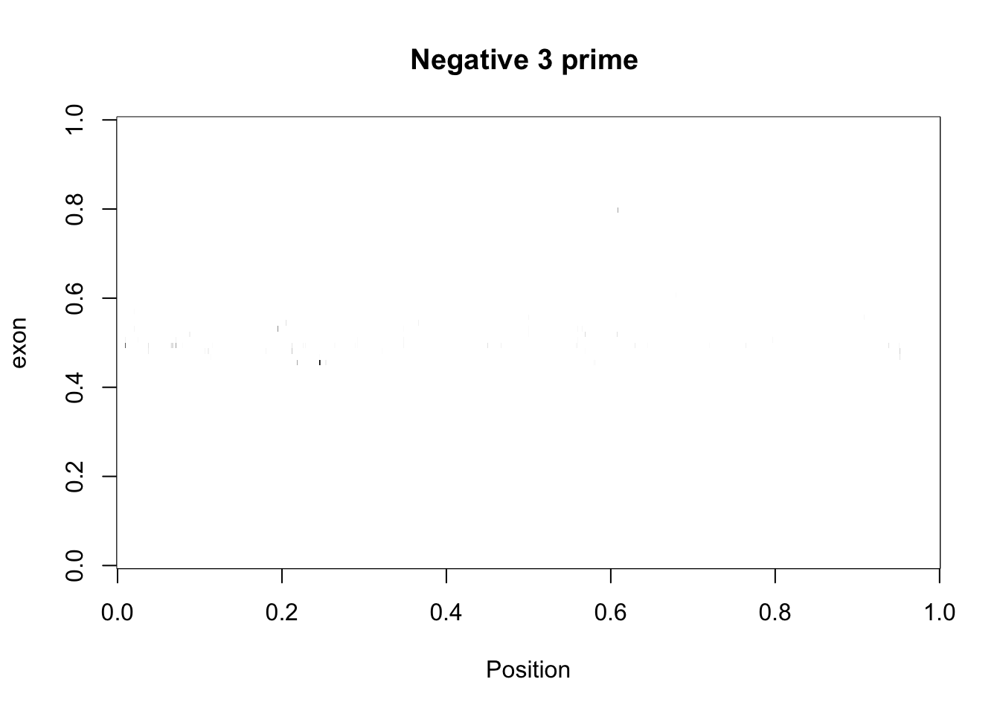
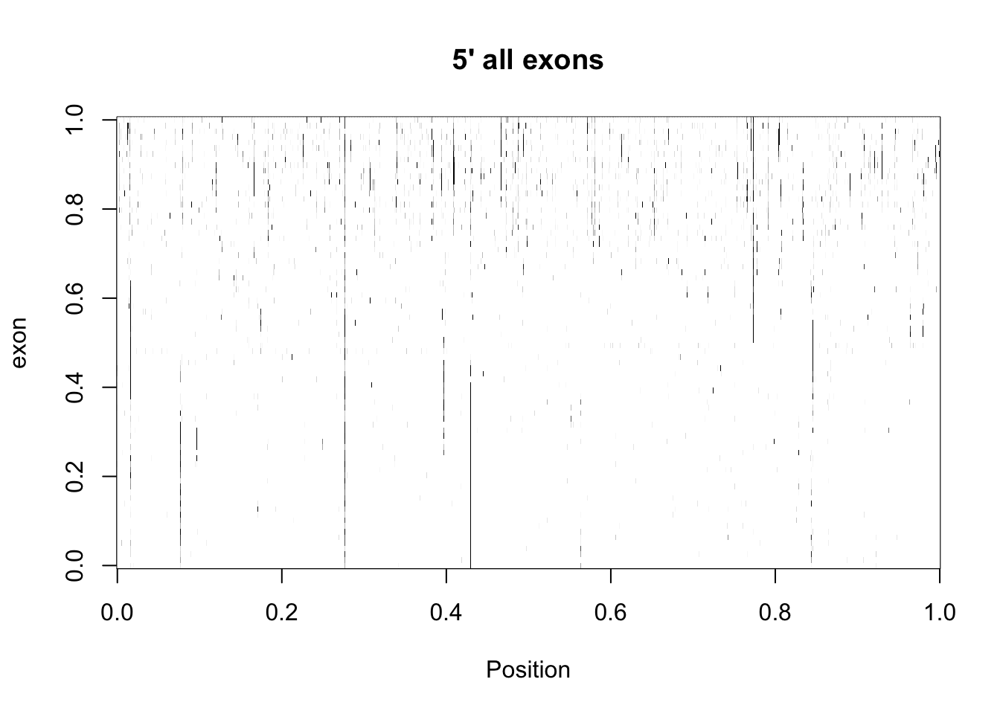
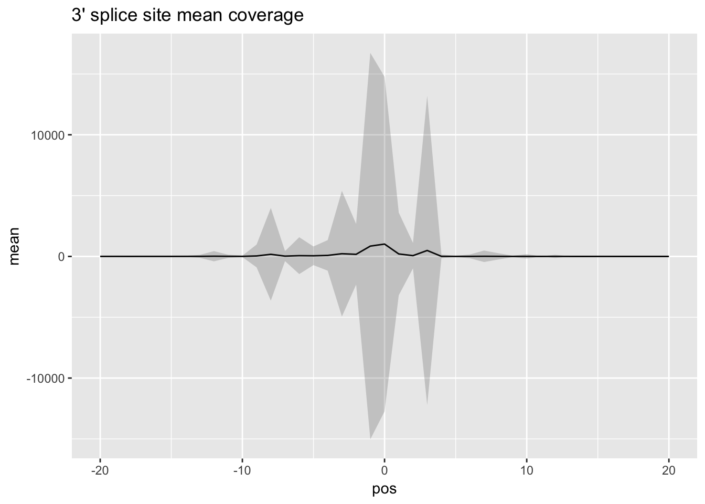

Recreate Figures with my data
Briana Mittleman
2018-03-13
Last updated: 2018-03-21
Code version: 5cacd16
This analysis is to recreate some of the figures from the Mayer paper using my data.
library(dplyr)
Attaching package: 'dplyr'The following objects are masked from 'package:stats':
filter, lagThe following objects are masked from 'package:base':
intersect, setdiff, setequal, unionlibrary(ggplot2)
library(workflowr)Loading required package: rmarkdownThis is workflowr version 0.7.0
Run ?workflowr for help getting startedlibrary(gplots)
Attaching package: 'gplots'The following object is masked from 'package:stats':
lowesslibrary(RColorBrewer)
library(scales)
library(reshape2)Warning: package 'reshape2' was built under R version 3.4.3Fig1D
Correlation between 2 biological replicates for netseq gene counts. ‘The data set with higher coverage was randomly downsampled to match the total number of reads of the other data set.’
First I will do this pre-filtering.
gene_cov_18486= read.table("../data/NET3-18486.gene.coverage.bed")
colnames(gene_cov_18486)= c("chr", "start", "end", "gene", "score", "strand", "count")
gene_cov_18505= read.table("../data/NET3-18505.gene.coverage.bed")
colnames(gene_cov_18505)= c("chr", "start", "end", "gene", "score", "strand", "count")Sum for each of the counts:
sum(gene_cov_18486$count)[1] 166338954sum(gene_cov_18505$count)[1] 128882124plot(gene_cov_18486$count~gene_cov_18505$count, ylim=c(0,50000), xlim=c(0,50000))Change to RPKM: divide by million of reads in the library and length :
18486: mapped reads: 65189389 18505: mapped reads: 52507749
mapped_18486_mil= 65189389 / 10^6
mapped_18505_mil= 52507749 / 10^6
gene_cov_18486 =gene_cov_18486 %>% mutate(K_length= (end - start)/100) %>% mutate(rpkm=.25 + count/(K_length * mapped_18486_mil))
gene_cov_18505 =gene_cov_18505 %>% mutate(K_length= (end - start)/100) %>% mutate(rpkm= .25 +count/(K_length * mapped_18505_mil))Plot again:
plot(log10(gene_cov_18486$rpkm) ~log10(gene_cov_18505$rpkm), ylab="log10 RPKM reads 18486", xlab="log10 RPKM reads 18505", main="Fig 1D recreation")
abline(lm(log10(gene_cov_18486$rpkm) ~ log10(gene_cov_18505$rpkm)), col="blue")correlation:
cor(log10(gene_cov_18486$rpkm),log10(gene_cov_18505$rpkm))[1] 0.9807117Fig7b
Find top exons
Create the exon file from gencode.v19.annotation.bed. Filter the exons.
awk '/exon/' gencode.v19.annotation.gtf > gencode.v19.exon.annotation.gtfUse featureCounts to quantify counts in these exons for 18486.
#!/bin/bash
#SBATCH --job-name=exon_cov
#SBATCH --time=8:00:00
#SBATCH --output=exon_cov.out
#SBATCH --error=exon_cov.err
#SBATCH --partition=broadwl
#SBATCH --mem=20G
#SBATCH --mail-type=END
module load Anaconda3
source activate net-seq
#input is a bed file
sample=$1
describer=$(echo ${sample} | sed -e 's/.*\YG-SP-//' | sed -e "s/_combined_Netpilot-sort.bam$//")
featureCounts -T 5 -a /project2/gilad/briana/genome_anotation_data/gencode.v19.exon.annotation.gtf -t exon -g exon_id -o /project2/gilad/briana/Net-seq-pilot/data/exon_cov/${describer}_combined_Netpilot-sort.exon.cov.txt $1
Run on /project2/gilad/briana/Net-seq-pilot/data/sort/YG-SP-NET3-18486_combined_Netpilot-sort.bam
Filter the exons I want to use for the analsis:
- convert to RPKM (divide by length of the exon and by library read)
exon_cov_18486= read.table("../data/NET3-18486_combined_Netpilot-sort.exon.cov.txt", header=TRUE)
colnames(exon_cov_18486)= c("ExonID", "Chr", "Start", "End", "Strand", "Length","Count" )Convert to RPKM
- mapped reads from the summary
mapped_reads= 40670322 + 9798066 + 14721001
exon_cov_18486= exon_cov_18486 %>% mutate(RPKM=(Count/(Length/1000))/(mapped_reads/10^6))
exon_cov_18486_no0= exon_cov_18486 %>% filter(RPKM!=0)Plot the exon counts in log10(RPKM):
plot(log10(sort(exon_cov_18486_no0$RPKM, decreasing = TRUE)), col=ifelse(log10(sort(exon_cov_18486_no0$RPKM, decreasing = TRUE))>.28, "red", "black"), ylab = "log10 RPKM", xlab="Exon", main= "RPKM expression of exons 18486")
log10(sort(exon_cov_18486_no0$RPKM, decreasing = TRUE))[1990][1] 0.2804453#39803*.05Use top 5% - the top 10.
exon_cov_18486_no0_sort= exon_cov_18486_no0[order(exon_cov_18486_no0$RPKM, decreasing = TRUE),]
exon_cov_18486_no0_sort = exon_cov_18486_no0_sort %>% filter(log10(RPKM) > .28)
exon_list_table= exon_cov_18486_no0_sort[6:1911,1:6 ]
#write.table(exon_list_table,"../data/top5_exonlist.txt", col.names = TRUE, row.names = FALSE, quote = FALSE, sep="\t" )File is: /project2/gilad/briana/Net-seq-pilot/data/exon_cov/top5_exonlist_18486.bed
Extract covereage at these exon junctions
I want to make two seperate files, one for the 3’ SS and one for the 5’ splice site.
less top5_exonlist2_18486.txt | awk ' {if($5 == "+") print($1 "\t" $2 "\t" $3 -40 "\t" $3 +40 "\t" $5 ); else print($1 "\t" $2 "\t" $4 - 40 "\t" $4 +40 "\t" $5)}' > top5_exonlist_18486_fiveprime.txt
less top5_exonlist2_18486.txt | awk ' {if($5 == "+") print($1 "\t" $2 "\t" $4 -40 "\t" $4 +40 "\t" $5 ); else print($1 "\t" $2 "\t" $3 - 40 "\t" $3 + 40 "\t" $5)}' > top5_exonlist_18486_threeprime.txt
Problem: exon list has some exons twice in the same line
cp top5_exonlist_18486.txt test.txt
awk '{print($2)}' test.txt| cut -d ";" -f1 > test.col2.txt
awk '{print($3)}' test.txt| cut -d ";" -f1 > test.col3.txt
awk '{print($4)}' test.txt| cut -d ";" -f1 > test.col4.txt
awk '{print($5)}' test.txt| cut -d ";" -f1 > test.col5.txt
awk '{print($1)}' test.txt > test.col1.txt
awk '{print($6)}' test.txt > test.col6.txt
paste -d "\t" test.col1.txt test.col2.txt test.col3.txt test.col4.txt test.col5.txt test.col6.txt > top5_exonlist2_18486.txtRerun aboove to seperate the 3’ and 5’
Remove the chr so I can match it to the genome coverage file:
cat top5_exonlist_18486_fiveprime.txt | sed 's/chr//' > top5_exonlist_18486_fiveprime_noCHR.txt
cat top5_exonlist_18486_threeprime.txt | sed 's/chr//' > top5_exonlist_18486_threeprime_noCHR.txtMake a bed file with just the first base of each of my reads from /project2/gilad/briana/Net-seq-pilot/data/bed/YG-SP-NET3-18486_combined_Netpilot-sort.bed . For positive reads I use the start and the start +1 and for negative reads I use the end -1 and the end. I then will use bedtools coverage -d -s (force strandedness).
- make top5_exonlist_18486_threeprime_noCHR.txt and top5_exonlist_18486_fiveprime_noCHR.txt bed format
awk '{print ($2 "\t" $3 "\t" $4 "\t" $1 "\t.\t" $5)}' top5_exonlist_18486_threeprime_noCHR.txt| sort -k1,1 -k2,2n > top5_exonlist_18486_threeprime_noCHR.bed
awk '{print ($2 "\t" $3 "\t" $4 "\t" $1 "\t.\t" $5)}' top5_exonlist_18486_fiveprime_noCHR.txt| sort -k1,1 -k2,2n > top5_exonlist_18486_fiveprime_noCHR.bed
sort YG-SP-NET3-18486_combined_Netpilot-sort.bed the same way to make this easier.
sort -k1,1 -k2,2n YG-SP-NET3-18486_combined_Netpilot-sort.bed > YG-SP-NET3-18486_combined_Netpilot-sort2.bed- make the YG-SP-NET3-18486_combined_Netpilot-sort2.bed 1 bp resoluton with awk
awk '{if($6 == "+") print($1 "\t" $2 "\t" $2 + 1 "\t" $4 "\t" $5 "\t" $6 ); else print($1 "\t" $3 -1 "\t" $3 "\t" $4 "\t" $5 "\t" $6 )}' YG-SP-NET3-18486_combined_Netpilot-sort2.bed > YG-SP-NET3-18486_combined_Netpilot-sort2-bp.bed- bedtools script:
#!/bin/bash
#SBATCH --job-name=ss_cov
#SBATCH --time=8:00:00
#SBATCH --output=ss_cov.out
#SBATCH --error=ss_cov.err
#SBATCH --partition=broadwl
#SBATCH --mem=40G
#SBATCH --mail-type=END
module load Anaconda3
source activate net-seq
bedtools coverage -d -s -a /project2/gilad/briana/Net-seq-pilot/data/exon_cov/top5_exonlist_18486_threeprime_noCHR.bed -b /project2/gilad/briana/Net-seq-pilot/data/bed/YG-SP-NET3-18486_combined_Netpilot-sort2-bp2.bed > /project2/gilad/briana/Net-seq-pilot/data/ss_cov/top5_exonlist_18486_threeprime_cov.txt
bedtools coverage -d -s -a /project2/gilad/briana/Net-seq-pilot/data/exon_cov/top5_exonlist_18486_fiveprime_noCHR.bed -b /project2/gilad/briana/Net-seq-pilot/data/bed/YG-SP-NET3-18486_combined_Netpilot-sort2-bp2.bed > /project2/gilad/briana/Net-seq-pilot/data/ss_cov/top5_exonlist_18486_fiveprime_cov.txt Import and group by exon
five_prime_cov=read.table("../data/top5_exonlist_18486_fiveprime_cov.txt")
colnames(five_prime_cov)= c("chr", "start", "end", "exon", "score","strand", "pos", "count")
three_prime_cov=read.table("../data/top5_exonlist_18486_threeprime_cov.txt")
colnames(three_prime_cov)= c("chr", "start", "end", "exon","score","strand", "pos", "count")summarize on window position to make top plot
cov_bypos_pos= five_prime_cov %>% filter(strand=="+") %>% group_by(pos) %>% summarise(sum_pos=sum(count))
cov_bypos_neg= five_prime_cov %>% filter(strand=="-") %>% group_by(pos) %>% summarise(sum_pos=sum(count))
cov_bypos_neg_vec= rev(as.numeric(unlist(cov_bypos_neg[,2])))
cov_bypos=cbind(cov_bypos_pos, cov_bypos_neg_vec)
cov_bypos_all= cov_bypos %>% mutate(sum_by_pos=sum_pos + cov_bypos_neg_vec )
cov_bypos_all= cov_bypos_all %>% select(pos, sum_by_pos)Plot it:
cov_bypos_all_long=melt(cov_bypos_all, id.vars = 'pos', value.name ='count' ) %>% filter(pos > 30 & pos< 50)
ggplot(cov_bypos_all_long,aes(pos,count)) + geom_line() + ggtitle("5' splice site")3 prime end:
cov_bypos_pos_3= three_prime_cov %>% filter(strand=="+") %>% group_by(pos) %>% summarise(sum_pos=sum(count))
cov_bypos_neg_3= three_prime_cov %>% filter(strand=="-") %>% group_by(pos) %>% summarise(sum_pos=sum(count))
cov_bypos_neg_vec_3= rev(as.numeric(unlist(cov_bypos_neg_3[,2])))
cov_bypos_3=cbind(cov_bypos_pos_3, cov_bypos_neg_vec_3)
cov_bypos_all_3= cov_bypos_3 %>% mutate(sum_by_pos=sum_pos + cov_bypos_neg_vec_3 )
cov_bypos_all_3= cov_bypos_all_3 %>% select(pos, sum_by_pos)cov_bypos_all_long_3=melt(cov_bypos_all_3, id.vars = 'pos', value.name ='count' ) %>% filter(pos > 20 & pos< 60)
ggplot(cov_bypos_all_long_3,aes(pos,count)) + geom_line() + ggtitle("3' splice site") Try without strand specificity
-get rid of the highly expressed bins if one of these exons is in it.
The script splicesite_cov2.sh is not strand specific on mapping coverage.
#!/bin/bash
#SBATCH --job-name=ss_cov2
#SBATCH --time=8:00:00
#SBATCH --output=ss_cov2.out
#SBATCH --error=ss_cov2.err
#SBATCH --partition=broadwl
#SBATCH --mem=40G
#SBATCH --mail-type=END
module load Anaconda3
source activate net-seq
bedtools coverage -d -a /project2/gilad/briana/Net-seq-pilot/data/exon_cov/top5_exonlist_18486_threeprime_noCHR.bed -b /project2/gilad/briana/Net-seq-pilot/data/bed/YG-SP-NET3-18486_combined_Netpilot-sort2-bp2.bed > /project2/gilad/briana/Net-seq-pilot/data/ss_cov/top5_exonlist_18486_threeprime_cov2.txt
bedtools coverage -d -a /project2/gilad/briana/Net-seq-pilot/data/exon_cov/top5_exonlist_18486_fiveprime_noCHR.bed -b /project2/gilad/briana/Net-seq-pilot/data/bed/YG-SP-NET3-18486_combined_Netpilot-sort2-bp2.bed > /project2/gilad/briana/Net-seq-pilot/data/ss_cov/top5_exonlist_18486_fiveprime_cov2.txt five_prime_cov2=read.table("../data/top5_exonlist_18486_fiveprime_cov2.txt", stringsAsFactors = FALSE)
colnames(five_prime_cov2)= c("chr", "start", "end", "exon", "score","strand", "pos", "count")
three_prime_cov2=read.table("../data/top5_exonlist_18486_threeprime_cov2.txt", stringsAsFactors = FALSE)
colnames(three_prime_cov2)= c("chr", "start", "end", "exon","score","strand", "pos", "count")cov_bypos_pos2= five_prime_cov2 %>% filter(strand=="+") %>% group_by(pos) %>% summarise(sum_pos=sum(count))
cov_bypos_neg2= five_prime_cov2 %>% filter(strand=="-") %>% group_by(pos) %>% summarise(sum_pos=sum(count))
cov_bypos_neg_vec2= rev(as.numeric(unlist(cov_bypos_neg2[,2])))
cov_bypos2=cbind(cov_bypos_pos2, cov_bypos_neg_vec2)
cov_bypos_all2= cov_bypos2 %>% mutate(sum_by_pos=sum_pos + cov_bypos_neg_vec )
cov_bypos_all2= cov_bypos_all2 %>% select(pos, sum_by_pos)Plot it:
cov_bypos_all_long2=melt(cov_bypos_all2, id.vars = 'pos', value.name ='count' )
ggplot(cov_bypos_all_long2,aes(pos,count)) + geom_line() + ggtitle("5' splice site, not SS")3 prime end:
cov_bypos_pos2_3= three_prime_cov2 %>% filter(strand=="+") %>% group_by(pos) %>% summarise(sum_pos=sum(count))
cov_bypos_neg2_3= three_prime_cov2 %>% filter(strand=="-") %>% group_by(pos) %>% summarise(sum_pos=sum(count))
cov_bypos_neg_vec2_3= rev(as.numeric(unlist(cov_bypos_neg2_3[,2])))
cov_bypos2_3=cbind(cov_bypos_pos2_3, cov_bypos_neg_vec2_3)
cov_bypos_all2_3= cov_bypos2_3 %>% mutate(sum_by_pos=sum_pos + cov_bypos_neg_vec2_3 )
cov_bypos_all2_3= cov_bypos_all2_3 %>% select(pos, sum_by_pos)cov_bypos_all_long2_3=melt(cov_bypos_all2_3, id.vars = 'pos', value.name ='count' ) %>% filter(pos > 20 & pos< 60)
ggplot(cov_bypos_all_long2_3,aes(pos,count)) + geom_line() + ggtitle("3' splice site, not SS") Filter out the locations in bins and small RNAs
I will use the files I created in the create_blacklist analysis to filter the exon regions that fall in those locations. Use bedtools intersect:
/project2/gilad/briana/genome_anotation_data/top5_gen_wind200.tab.nochr.sort.bed
project2/gilad/briana/genome_anotation_data/snRNA.gencode.v19.nochr.bed
/project2/gilad/briana/genome_anotation_data/snoRNA.gencode.v19.nochr.bed
/project2/gilad/briana/genome_anotation_data/rRNA.gencode.v19.nochr.bed
splicesite_cov2_filter.sh
#!/bin/bash
#SBATCH --job-name=filt_exoncov
#SBATCH --time=8:00:00
#SBATCH --output=filt_exoncov_sbatch.out
#SBATCH --error=filt_exoncov_sbatch.err
#SBATCH --partition=broadwl
#SBATCH --mem=40G
#SBATCH --mail-type=END
module load Anaconda3
source activate net-seq
bedtools intersect -v -wa -a /project2/gilad/briana/Net-seq-pilot/data/exon_cov/top5_exonlist_18486_fiveprime_noCHR.bed -b /project2/gilad/briana/genome_anotation_data/top5_gen_wind200.tab.nochr.sort.bed /project2/gilad/briana/genome_anotation_data/snRNA.gencode.v19.nochr.bed /project2/gilad/briana/genome_anotation_data/snoRNA.gencode.v19.nochr.bed /project2/gilad/briana/genome_anotation_data/rRNA.gencode.v19.nochr.bed > /project2/gilad/briana/Net-seq-pilot/data/exon_cov/top5_exonlist_18486_fiveprime_noCHR_filter.bed
bedtools coverage -d -a /project2/gilad/briana/Net-seq-pilot/data/exon_cov/top5_exonlist_18486_fiveprime_noCHR_filter.bed -b /project2/gilad/briana/Net-seq-pilot/data/bed/YG-SP-NET3-18486_combined_Netpilot-sort2-bp2.bed > /project2/gilad/briana/Net-seq-pilot/data/ss_cov/top5_exonlist_18486_fiveprime_cov2_filter.txt
bedtools intersect -v -wa -a /project2/gilad/briana/Net-seq-pilot/data/exon_cov/top5_exonlist_18486_threeprime_noCHR.bed -b /project2/gilad/briana/genome_anotation_data/top5_gen_wind200.tab.nochr.sort.bed /project2/gilad/briana/genome_anotation_data/snRNA.gencode.v19.nochr.bed /project2/gilad/briana/genome_anotation_data/snoRNA.gencode.v19.nochr.bed /project2/gilad/briana/genome_anotation_data/rRNA.gencode.v19.nochr.bed > /project2/gilad/briana/Net-seq-pilot/data/exon_cov/top5_exonlist_18486_threeprime_noCHR_filter.bed
bedtools coverage -d -a /project2/gilad/briana/Net-seq-pilot/data/exon_cov/top5_exonlist_18486_threeprime_noCHR_filter.bed -b /project2/gilad/briana/Net-seq-pilot/data/bed/YG-SP-NET3-18486_combined_Netpilot-sort2-bp2.bed > /project2/gilad/briana/Net-seq-pilot/data/ss_cov/top5_exonlist_18486_threeprime_cov2_filter.txt
This results in 464 3-prime and 445 5-prime exons.
five_prime_cov_F=read.table("../data/top5_exonlist_18486_fiveprime_cov2_filter.txt")
colnames(five_prime_cov_F)= c("chr", "start", "end", "exon", "score","strand", "pos", "count")
three_prime_cov_F=read.table("../data/top5_exonlist_18486_threeprime_cov2_filter.txt")
colnames(three_prime_cov_F)= c("chr", "start", "end", "exon","score","strand", "pos", "count")cov_bypos_pos_F= five_prime_cov_F %>% filter(strand=="+") %>% group_by(pos) %>% summarise(sum_pos=sum(count))
cov_bypos_neg2_F= five_prime_cov_F %>% filter(strand=="-") %>% group_by(pos) %>% summarise(sum_pos=sum(count))
cov_bypos_neg_vec_F= rev(as.numeric(unlist(cov_bypos_neg2_F[,2])))
cov_bypos_F=cbind(cov_bypos_pos_F, cov_bypos_neg_vec_F)
cov_bypos_all_F= cov_bypos_F %>% mutate(sum_by_pos=sum_pos + cov_bypos_neg_vec )
cov_bypos_all_F= cov_bypos_all_F %>% select(pos, sum_by_pos)Plot it:
cov_bypos_all_long_F=melt(cov_bypos_all_F, id.vars = 'pos', value.name ='count' )
ggplot(cov_bypos_all_long_F,aes(pos,count)) + geom_line() + ggtitle("5' splice site filtered exons")3 prime end:
cov_bypos_posF_3= three_prime_cov_F %>% filter(strand=="+") %>% group_by(pos) %>% summarise(sum_pos=sum(count))
cov_bypos_negF_3= three_prime_cov_F %>% filter(strand=="-") %>% group_by(pos) %>% summarise(sum_pos=sum(count))
cov_bypos_neg_vecF_3= rev(as.numeric(unlist(cov_bypos_negF_3[,2])))
cov_byposF_3=cbind(cov_bypos_posF_3, cov_bypos_neg_vecF_3)
cov_bypos_allF_3= cov_byposF_3 %>% mutate(sum_by_pos=sum_pos + cov_bypos_neg_vec2_3 )
cov_bypos_allF_3= cov_bypos_allF_3 %>% select(pos, sum_by_pos)cov_bypos_all_longF_3=melt(cov_bypos_allF_3, id.vars = 'pos', value.name ='count' )
ggplot(cov_bypos_all_longF_3,aes(pos,count)) + geom_line() + ggtitle("3' splice site filtered exons") Change data structure
I want the data to be in a matrix exon by position. The row name is the every 80th entry of of the coverage file (1, 81, 161) and there should be 1906 rows. The rows are the 80 counts in the count column of the coverage file. I need to make a for loop through the rows that goes through seq(1,152480,80). I run this on cov_bypos_pos2_small first.
#five_prime_cov2_small=five_prime_cov2[1:160,]
#update data upload to have string at factor =false
make_matrix=function(cov_df){
matrix2=c(1:80)
names2=vector()
for (i in seq(1,nrow(cov_df),80)){
names2= append(names2,cov_df[i,4])
row_i=vector()
for (ea in seq(0,79,1)){
row_i= append(row_i, cov_df[i + ea,8])
}
matrix2=rbind(matrix2, row_i)
}
return(as.matrix(matrix2[2:nrow(matrix2),]))
}Try this on the five prime coverage2 file. I need to normalize the points in the matrix so some are not super high.
five_prime_matrix2=make_matrix(five_prime_cov2)
five_prime_matrix2_norm=apply(t(five_prime_matrix2), 1, rescale)Make an image picture:
my_palette <- colorRampPalette(c("white", "black"))(n = 100)
image(five_prime_matrix2_norm,col=my_palette, ylab="exon", xlab="Position")Try on 3prime:
three_prime_matrix2=make_matrix(three_prime_cov2)
three_prime_matrix2_norm=apply(t(three_prime_matrix2), 1, rescale)
image(three_prime_matrix2_norm,col=my_palette, ylab="exon", xlab="Position")Try with a binary matrix:
make_binary=function(matrix){
new_matrix= matrix(NA, nrow = nrow(matrix), ncol = ncol(matrix))
for(row in 1:nrow(matrix)) {
for(col in 1:ncol(matrix)) {
if(matrix[row,col]!= 0){
new_matrix[row,col]= 1
}
else{
new_matrix[row,col] = 0
}
}
}
return(new_matrix)
}
five_prime_matrix2_bin=make_binary(five_prime_matrix2)
three_prime_matrix2_bin= make_binary(three_prime_matrix2)Try image with these:
image(three_prime_matrix2_bin,col=my_palette, ylab="exon", xlab="Position", main="Three prime coverage")image(five_prime_matrix2_bin,col=my_palette, ylab="exon", xlab="Position", main="Five prime coverage")Try to find a natural cuttoff to change the highest reads:
vec_five_prime_matrix2=vector("numeric", length = 152480)
for(row in 1:nrow(five_prime_matrix2)) {
for(col in 1:ncol(five_prime_matrix2)) {
vec_five_prime_matrix2[(row*col)]=five_prime_matrix2[row,col]
}
}summary(vec_five_prime_matrix2) Min. 1st Qu. Median Mean 3rd Qu. Max.
0.00 0.00 0.00 2.06 0.00 128251.00 plot(log10(vec_five_prime_matrix2))
abline(h=2, col="red")quantile(vec_five_prime_matrix2,c(.995, .998, .999)) 99.5% 99.8% 99.9%
6.000 36.000 125.042 Make any value above top .2% value (36)==36
cut_top=function(matrix){
new_matrix= matrix(NA, nrow = nrow(matrix), ncol = ncol(matrix))
for(row in 1:nrow(matrix)) {
for(col in 1:ncol(matrix)) {
if(matrix[row,col]>= 36){
new_matrix[row,col]= 36
}
else{
new_matrix[row,col] = matrix[row,col]
}
}
}
return(new_matrix)
}three_prime_matrix2_998=cut_top(three_prime_matrix2)
five_prime_matrix2_998=cut_top(five_prime_matrix2)Create the image:
image(three_prime_matrix2_998,col=my_palette, ylab="exon", xlab="Position", main="Three prime coverage")
image(five_prime_matrix2_998,col=my_palette, ylab="exon", xlab="Position", main="Five prime coverage")I need to pull the data frames in pos and neg seperatly!! these images do not have flipped rows for neg strand
Run on just the positive strand first:
cov_bypos_pos2_matrix= five_prime_cov %>% filter(strand=="+") %>% make_matrix()
image(cov_bypos_pos2_matrix,col=my_palette, ylab="exon", xlab="Position", main="Positive 5 prime ")cov_bypos_pos2_3_matrix = three_prime_cov2 %>% filter(strand=="+") %>% make_matrix()
image(cov_bypos_pos2_3_matrix,col=my_palette, ylab="exon", xlab="Position", main="Positive 3 prime ")Do the same with the negative:
cov_bypos_neg2_matrix= five_prime_cov2 %>% filter(strand=="-") %>% make_matrix()
image(cov_bypos_neg2_matrix,col=my_palette, ylab="exon", xlab="Position", main="Negative 5 prime ")
cov_bypos_neg2_3_matrix= three_prime_cov2 %>% filter(strand=="-") %>% make_matrix()
image(cov_bypos_neg2_3_matrix,col=my_palette, ylab="exon", xlab="Position", main="Negative 3 prime ") Make a function to reverse each row of the negative matricies:
rev_rows=function(matrix){
new_matrix= matrix(NA, nrow = nrow(matrix), ncol = ncol(matrix))
for (row in 1:nrow(matrix)){
x= rev(matrix[row,])
new_matrix[row,]=x
}
return(new_matrix)
}Use this function to flip the negative matrix then bind it to the original. I will also cut the top to better the vizualization.
flip_neg2_5prime=rev_rows(cov_bypos_neg2_matrix)
full_5prime_matrix_cut= rbind(cov_bypos_pos2_matrix,flip_neg2_5prime) %>% cut_top()
flip_neg2_3prime=rev_rows(cov_bypos_neg2_3_matrix)
full_3prime_matrix_cut=rbind(cov_bypos_pos2_3_matrix, flip_neg2_3prime) %>% cut_top()Images
image(full_5prime_matrix_cut,col=my_palette, ylab="exon", xlab="Position", main="5' all exons")
image(full_3prime_matrix_cut,col=my_palette, ylab="exon", xlab="Position", main="3' all exons")Make these with the ggplot version:
heatmap.2(full_5prime_matrix_cut,dendrogram='none', Rowv=FALSE, Colv=FALSE,trace='none')Try to make the top plots with mean and sd:
full_5prime_matrix= rbind(cov_bypos_pos2_matrix,flip_neg2_5prime)
means_5prime=apply(full_5prime_matrix, 2, mean)
sd_5prime=apply(full_5prime_matrix, 2, sd)
df_5prime=as.data.frame(cbind(pos=seq(-40,39,1), mean=means_5prime, SD=sd_5prime))
df_5prime_long= melt(df_5prime, id.vars="pos", measure.vars = c("mean", "SD"), varnames =c("mean", "SD"))Plot the mean at each position:
ggplot(df_5prime,aes(x=pos, y=mean)) + geom_line() + ggtitle("5' splice site") + geom_ribbon(aes(x=pos, ymin=mean - SD,ymax=mean + SD), alpha=0.20) + xlim(c(-20,20))Warning: Removed 39 rows containing missing values (geom_path).Same for 3prime:
full_3prime_matrix=rbind(cov_bypos_pos2_3_matrix, flip_neg2_3prime)
means_3prime=apply(full_3prime_matrix, 2, mean)
sd_3prime=apply(full_3prime_matrix, 2, sd)
df_3prime=as.data.frame(cbind(pos=seq(-40,39,1), mean=means_3prime, SD=sd_3prime))
df_3prime_long= melt(df_3prime, id.vars="pos", measure.vars = c("mean", "SD"), varnames =c("mean", "SD"))
ggplot(df_3prime,aes(x=pos, y=mean)) + geom_line() + ggtitle("3' splice site mean coverage")+ geom_ribbon(aes(x=pos, ymin=mean - SD,ymax=mean + SD), alpha=0.20) +
xlim(c(-20,20))Warning: Removed 39 rows containing missing values (geom_path).
Normalize per exon with my own function and recreate this with the means of the normalized values. I will write the normalization function for rows then use apply for the matrix.
normalize_row=function(row){
new_row=c()
min= as.numeric(min(row))
max= as.numeric(max(row))
for (val in row){
newval= (val-min)/(max-min)
new_row=append(new_row, newval)
}
return(new_row)
}
apply_row= function(matrix){
new_matrix= matrix(NA, nrow = nrow(matrix), ncol = ncol(matrix))
for (row in 1:nrow(matrix)){
x=normalize_row(matrix[row,])
new_matrix[row,]=x
}
return(new_matrix)
}full_3prime_matrix_norm= apply_row(full_3prime_matrix)
full_3prime_matrix_norm= na.omit(full_3prime_matrix_norm)
means_3prime_norm=apply(full_3prime_matrix_norm, 2, mean)
sd_3prime_norm=apply(full_3prime_matrix_norm, 2, sd)
df_3prime_norm=as.data.frame(cbind(pos=seq(-40,39,1), mean=means_3prime_norm, SD=sd_3prime_norm))
norm_mean_plot3=ggplot(df_3prime_norm,aes(x=pos, y=mean)) + geom_line() + ggtitle("3' splice site mean coverage normalized")+ geom_ribbon(aes(x=pos, ymin=mean - SD,ymax=mean + SD), alpha=0.20)full_5prime_matrix_norm= apply_row(full_5prime_matrix)
full_5prime_matrix_norm= na.omit(full_5prime_matrix_norm)
means_5prime_norm=apply(full_3prime_matrix_norm, 2, mean)
sd_5prime_norm=apply(full_5prime_matrix_norm, 2, sd)
df_5prime_norm=as.data.frame(cbind(pos=seq(-40,39,1), mean=means_5prime_norm, SD=sd_5prime_norm))
norm_mean_plot5=ggplot(df_5prime_norm,aes(x=pos, y=mean)) + geom_line() + ggtitle("5' splice site mean coverage normalized")+ geom_ribbon(aes(x=pos, ymin=mean - SD,ymax=mean + SD), alpha=0.20)#heatmap_norm5prime=heatmap.2(full_5prime_matrix_norm,dendrogram='none', col=my_palette, Rowv=FALSE, Colv=FALSE,trace='none')
#heatmap_norm3prime=heatmap.2(full_3prime_matrix_norm,dendrogram='none', col=my_palette, Rowv=FALSE, Colv=FALSE,trace='none')Plot the plots together:
par(mfrow=c(2,2))
heatmap.2(full_5prime_matrix_norm,dendrogram='none', col=my_palette, Rowv=FALSE, Colv=FALSE,trace='none')heatmap.2(full_3prime_matrix_norm,dendrogram='none', col=my_palette, Rowv=FALSE, Colv=FALSE,trace='none')norm_mean_plot5
norm_mean_plot3Extra code/false attempts
Now make a python script that takes this and the genome coverage file in as a data frame. I will then make a list of the base counts corresponding to each exon region from the genome coverage file. Do it for the 5 prime file first.
import pandas as pd
exon_5prime= pd.read_table("/project2/gilad/briana/Net-seq-pilot/data/exon_cov/top5_exonlist_18486_fiveprime_noCHR.txt", header=None)
gen_cov= pd.read_table("/project2/gilad/briana/Net-seq-pilot/data/cov/YG-SP-NET3-18486_combined_Netpilot-sort.cov.bed", header=None)
#will make a list of lists that I will turn into a matrix later
exon_list=[]
for exon in exon_5prime.iterrows():
chr=exon[1]
start=exon[2]
end=exon[3]
Test on exon_5prime=pd.read_table(“/project2/gilad/briana/Net-seq-pilot/data/exon_cov/exon_5test.txt”, header=None)
awk 'BEGIN {ORS=","}; $1==1 && $2>=11968288 && $2<=11968368 {print $3}; END {print "\n"}' /project2/gilad/briana/Net-seq-pilot/data/cov/YG-SP-NET3-18486_combined_Netpilot-sort.cov.bed Session information
sessionInfo()R version 3.4.2 (2017-09-28)
Platform: x86_64-apple-darwin15.6.0 (64-bit)
Running under: macOS Sierra 10.12.6
Matrix products: default
BLAS: /Library/Frameworks/R.framework/Versions/3.4/Resources/lib/libRblas.0.dylib
LAPACK: /Library/Frameworks/R.framework/Versions/3.4/Resources/lib/libRlapack.dylib
locale:
[1] en_US.UTF-8/en_US.UTF-8/en_US.UTF-8/C/en_US.UTF-8/en_US.UTF-8
attached base packages:
[1] stats graphics grDevices utils datasets methods base
other attached packages:
[1] bindrcpp_0.2 reshape2_1.4.3 scales_0.5.0
[4] RColorBrewer_1.1-2 gplots_3.0.1 workflowr_0.7.0
[7] rmarkdown_1.8.5 ggplot2_2.2.1 dplyr_0.7.4
loaded via a namespace (and not attached):
[1] Rcpp_0.12.15 pillar_1.1.0 compiler_3.4.2
[4] git2r_0.21.0 plyr_1.8.4 bindr_0.1
[7] bitops_1.0-6 tools_3.4.2 digest_0.6.14
[10] jsonlite_1.5 evaluate_0.10.1 tibble_1.4.2
[13] gtable_0.2.0 pkgconfig_2.0.1 rlang_0.1.6
[16] yaml_2.1.16 stringr_1.2.0 knitr_1.18
[19] gtools_3.5.0 caTools_1.17.1 rprojroot_1.3-2
[22] grid_3.4.2 reticulate_1.4 glue_1.2.0
[25] R6_2.2.2 gdata_2.18.0 magrittr_1.5
[28] backports_1.1.2 htmltools_0.3.6 assertthat_0.2.0
[31] colorspace_1.3-2 labeling_0.3 KernSmooth_2.23-15
[34] stringi_1.1.6 lazyeval_0.2.1 munsell_0.4.3 This R Markdown site was created with workflowr